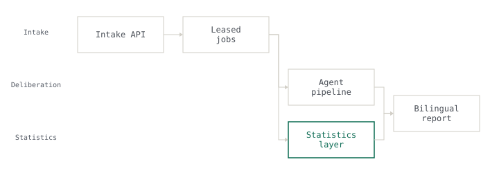

2026 · Deployed via gated CI · 1 of 24 engineers · sole owner of the subsystem
VoC 360
National citizen-feedback platform
Trend claims were taken off the model and moved into a deterministic layer.
694 Tests

Problem
An approval workflow failed every single time without ever raising an error. The cause was a transaction boundary: the commit discarded the session variables row-level security depended on, so tenant scope silently evaluated to nothing.
My role
The context line above is the honest split: where it says a team size, the system was a team effort and only the named subsystem was mine.
Approach
The constraint
Row-level security is the right place to enforce isolation precisely because application code cannot bypass it. That same property means its failure mode is empty results rather than exceptions — nothing raises, nothing logs, and the tests still pass.
What was rejected
Enforcement application code cannot bypass, against enforcement that announces itself when it breaks. Moving isolation up into the service layer would have made the failure loud, and made it bypassable.
What I built
I kept the guarantee in the database, bound the session-variable lifetime to the transaction explicitly, and rewrote the isolation tests to assert on rows returned rather than on errors raised. The same judgement drove the second decision in this service: trend detection was taken off the language model and pushed into a deterministic statistics layer — Mann-Kendall with Hamed-Rao correction, Theil-Sen slope — so that the layer making a quantitative claim is the layer that can prove it.
Results
Every number above is measured. None is estimated.
Stack
Links
- Source not public — built inside a government engagement. The architecture above is described without client detail.
What I learned
Trend claims were taken off the model and moved into a deterministic layer.